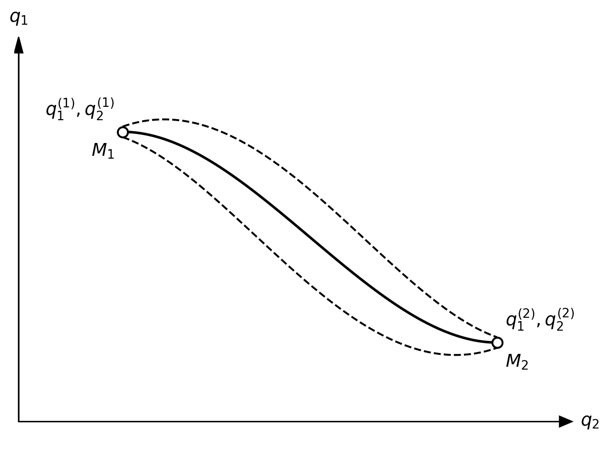
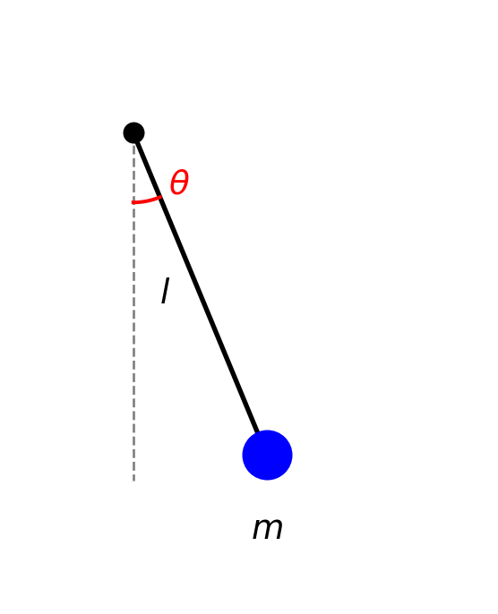
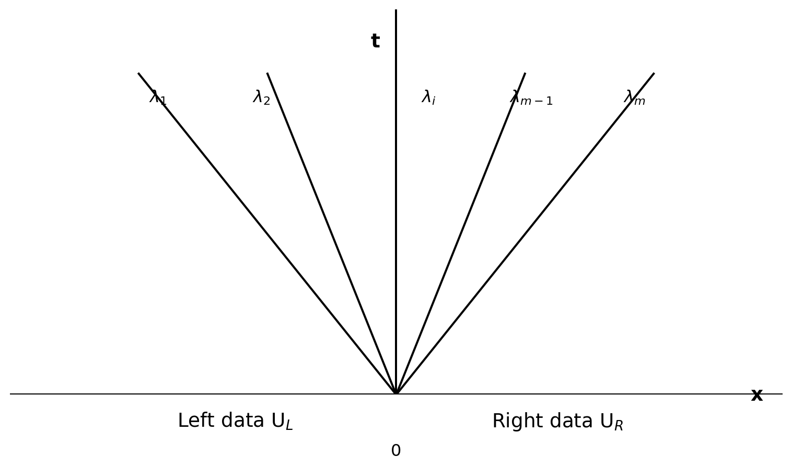
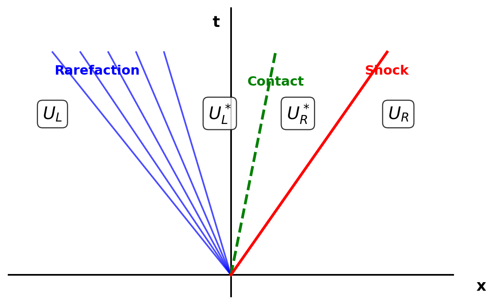
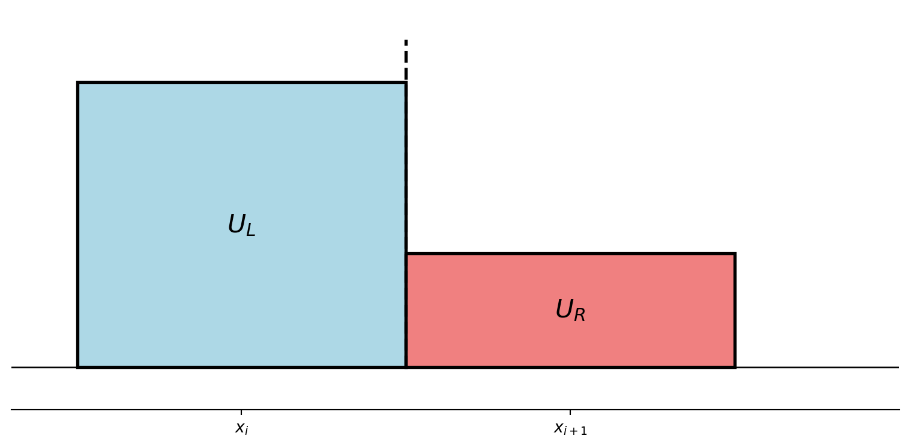
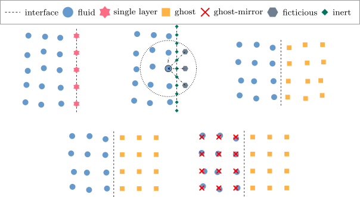
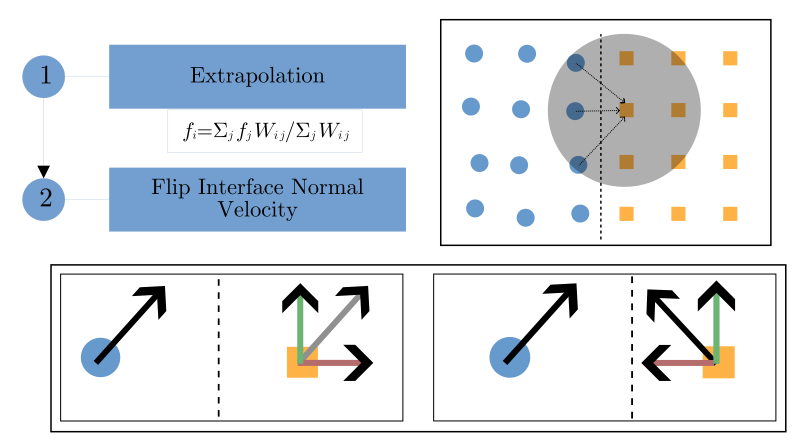
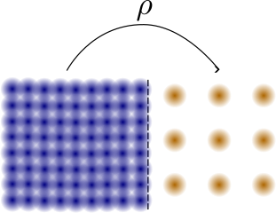

SPH for Compressible Flows
Navaneet
Contents
- SPH Equations from Lagrangian
- Godunov SPH
- MAGMA2 Scheme
- Artificial Viscosity Limiting
- Boundary Treatment
SPH Equations from Lagrangian
Generalized Coordinates: \(q_i, \dot{q}_i\)
\(i = 1, 2, \ldots, d\) for \(d\) degrees of freedom.
Examples
- Mass-Spring: \(\left(q, \dot{q} \right) = \left( x, \dot{x} \right)\)
- Pendulum: \(\left(q, \dot{q} \right) = \left( \theta, \dot{\theta} \right)\)
- Particle: \(\left( \begin{array}{cc} q_1 & \dot{q}_1 \\ q_2, & \dot{q}_2 \\ q_3 & \dot{q}_3 \end{array} \right) = (\mathbf{r}, \mathbf{v})\)
System of N particles?
3 x 2 x N
Lagrangian
\[ L = L\left(\{q_i\}, \{\dot{q}_i\}\right) \]
- \(q_i\) and \(\dot{q}_i\) are functions of time, i.e., \(q_i = q_i(t)\) and \(\dot{q}_i = \dot{q}_i(t)\).
- \(\dot{q}_i = \mathrm{d} q_i/\mathrm{d} t\)
Principle of Stationary Action
Action
\[ \tilde{S} = \int_{t_1}^{t_2} L\left(\{q_i\}, \{\dot{q}_i\}\right) \, \mathrm{d}t \]
Statement
There is a function \(L\) of coordinates whose integral has a minimum value during a motion
Euler-Lagrange Equations
Necessary condition for \(\tilde{S}\) to be minimum is that the coordinates \(q_i\) satisfy the Euler-Lagrange equations: \[ \forall i, \frac{\mathrm{d}}{\mathrm{d}t} \left( \frac{\partial L}{\partial \dot{q}_i} \right) - \frac{\partial L}{\partial q_i} = 0 \]
EOM using Lagrangian: Simple example of a pendulum
\[ L = \frac{1}{2} m v^2 - mgh = \frac{1}{2} m l^2 \dot{\theta}^2 + m g l \cos\theta \] \[ \frac{\mathrm{d}}{\mathrm{d}t} \left( \frac{\partial L}{\partial \dot{\theta}} \right) = m l^2 \ddot{\theta} ; \quad \frac{\partial L}{\partial \theta} = - m g l \sin\theta \] Therefore, \[ \boxed{\ddot{\theta} + \frac{g}{l} \sin\theta = 0} \]

SPH EOM from Lagrangian
Lagrangian for a System of Particles \[ L = \sum_{j} \frac{1}{2} m_j \mathbf{v}_j^2 - e_j \] where \(e_j\) is the specific internal energy of particle \(j\).
\[ \frac{\mathrm{d}}{\mathrm{d}t} \left( \frac{\partial L}{\partial \mathbf{v}_i} \right) = m_i \frac{\mathrm{d} \mathbf{v}_i}{\mathrm{d}t} \] and \[ \frac{\partial L}{\partial \mathbf{r}_i} = \sum_j m_j \frac{\partial e_j}{\partial \mathbf{r}_i} = \sum_j m_j \frac{\partial e_j}{\partial \rho_j} \nabla_i \rho_j . \] Using \(\mathrm{d} e = \left( p / \rho^2 \right) \mathrm{d} \rho\), \[ \frac{\partial L}{\partial \mathbf{r}_i} = \sum_j m_j \frac{p_j}{\rho_j^2} \nabla_i \rho_j. \]
Note
\[ \nabla_i \rho_j = \nabla_i \sum_k m_k W_{jk} = \sum_k m_k \nabla_i W_{jk} \] \(W_{jk}\) depends on \(\mathbf{r}_i\) only if \(i = j\) or \(i = k\). Therefore, \[ \nabla_i \rho_j = \sum_k \delta_{ik} m_k \nabla_i W_{jk} + \sum_k \delta_{ij} m_k \nabla_i W_{jk} = m_i \nabla_i W_{ji} + \sum_k \delta_{ij} m_k \nabla_i W_{jk} \]
Substituting back, \[ \begin{aligned} \frac{\partial L}{\partial \mathbf{r}_i} & = \sum_j m_j \frac{p_j}{\rho_j^2} \left( m_i \nabla_i W_{ji} + \delta_{ij} \sum_k m_k \nabla_i W_{jk} \right) \\ & = m_i \sum_{j} m_j \frac{p_j}{\rho_j^2} m_i \nabla_i W_{ji} + m_i \frac{p_i}{\rho_i^2} \sum_k m_k \nabla_i W_{ik} \\ & = m_i \sum_{j} m_j \frac{p_j}{\rho_j^2} m_i \nabla_i W_{ji} + m_i \frac{p_i}{\rho_i^2} \sum_j m_j \nabla_i W_{ij} \\ & = m_i \sum_{j} m_j \left( \frac{p_j}{\rho_j^2} + \frac{p_i}{\rho_i^2} \right) \nabla_i W_{ij} \end{aligned} \]
Recall, \[ \frac{\mathrm{d}}{\mathrm{d}t} \left( \frac{\partial L}{\partial \mathbf{v}_i} \right) = m_i \frac{\mathrm{d} \mathbf{v}_i}{\mathrm{d}t} \]
Putting together, \[ \frac{\mathrm{d}}{\mathrm{d}t} \left( \frac{\partial L}{\partial \mathbf{v}_i} \right) = -\frac{\partial L}{\partial \mathbf{r}_j} \\ \implies m_i \frac{\mathrm{d} \mathbf{v}_j}{\mathrm{d}t} = - m_i \sum_{j} m_j \left( \frac{p_j}{\rho_j^2} + \frac{p_i}{\rho_i^2} \right) \nabla_i W_{ij} \]
\[ \boxed{\frac{\mathrm{d} \mathbf{v}_j}{\mathrm{d}t} = - \sum_{j} m_j \left( \frac{p_j}{\rho_j^2} + \frac{p_i}{\rho_i^2} \right) \nabla_i W_{ij}} \]
Other Ways: 1
* inaccurate representation
Other Ways: 2
Key Takeaways
- Start with particle lagrangian and you arrive still arrive at same SPH EOM!
- No ad-hoc reasonings about why choose a particular discretization over the other.
Godunov SPH
General Riemann Problem1
A conservation law with discontinuous initial data.
PDE: \(\mathbf{U}_t + \mathbf{A} \mathbf{U}_x = 0\)
IC: \(\mathbf{U}(x, 0) = \begin{cases} \mathbf{U}_L & x < 0 \\ \mathbf{U}_R & x > 0 \end{cases}\)
Hyperbolic \(\implies\) Diagonalizable \(\implies\) \(\mathbf{A} = \mathbf{K} \Lambda \mathbf{K}^{-1}\)
\(\mathbf{W} = \mathbf{K}^{-1} \mathbf{U}\) or \(\mathbf{U} = \mathbf{K} \mathbf{W}\)
\(\mathbf{U}_t + \mathbf{A} \mathbf{U}_x = 0\) becomes \(\mathbf{W}_t + \Lambda \mathbf{W}_x = 0\)
General Riemann Problem Contd1
- \(\mathbf{W} = (w_1, w_2, \ldots, w_m)^T\) decoupled.
- \(w_i\) travels at speed \(\lambda_i\) and \(w_i(x, t) = w_i^0(x - \lambda_i t)\)

General Riemann Problem Contd1
- \(\mathbf{U} = \mathbf{K} \mathbf{W}\) can also be written as \[ \mathbf{U} = \sum_{i=1}^{m} w_i(x,t) \mathbf{K}^{(i)} = \sum_{i=1}^{m} w_i^0(x - \lambda_i t) \mathbf{K}^{(i)} \] where \(\mathbf{K}^{(i)}\) is the \(i\)-th column of \(\mathbf{K}\).
- The right and left states can also be expressed as \[ \mathbf{U}_{\text{L}} = \sum_{i=1}^{m} \alpha_i \mathbf{K}^{(i)} , \quad \mathbf{U}_{\text{R}} = \sum_{i=1}^{m} \beta_i \mathbf{K}^{(i)} \] Comparing the two expressions above, \[ w_i^0(x) = \begin{cases} \alpha_i & x < 0 \\ \beta_i & x > 0 \end{cases} \\ \implies w_i(x) = w_i^0(x - \lambda_i t) = \begin{cases} \alpha_i & x < \lambda_i t \\ \beta_i & x > \lambda_i t \end{cases} \] Putting it all together, \[ \boxed{\mathbf{U}(x, t) = \sum_{i=I+1}^{m} \alpha_i \mathbf{K}^{(i)} + \sum_{i=1}^{I} \beta_i \mathbf{K}^{(i)}} \] where the integer \(I\) is the maximum value of \(i\) such that \(\lambda_i < x/t\).
Riemann Problem for Euler Equations
Three waves separating four states.

\[ \lambda_1 = u - c , \quad \lambda_2 = u , \quad \lambda_3 = u + c \]
Godunov’s Scheme in Finite Volume
- Properties piecewise continuous over each cell.
- Discontinuities at interfaces.
- Riemann problems solved at each cell interface to get intercell fluxes.

Godunov SPH 1
Interface midway between particles \(i\) and \(j\).
Solve Riemann problem to find \(p^*\) and \(u^*\) at the interface.
Substitute in SPH discretized equations:
No artificial viscosity needed!
Original GSPH by Inutsuka(2002)2 is slightly different.
Godunov SPH Equations1
\[\rho = \sum_{j} m_j W_{ij}\] \[\frac{d \mathbf{v}_i}{d t} = - \sum_{j} m_j \left( \frac{p^*}{\rho_i^2} + \frac{p^*}{\rho_j^2} \right) \nabla_i W_{ij}\] \[\frac{d e_i}{d t} = \sum_{j} m_j \frac{p^*}{\rho_i^2} (\mathbf{v}^* - \mathbf{v}_i) \cdot \nabla_i W_{ij}\]
Key Takeaways
- Interaction between particles modeled using Riemann problems.
- Obtain \(p^*\) and \(u^*\) from Riemann solver.
- Substitute in SPH EOM.
- No artificial viscosity needed to capture shocks.
MAGMA2 Scheme
Derivatives without \(\nabla W_{ij}\)1 2
\[ \tilde{\mathbf{I}}_f(\mathbf{r}) = \int \left[ f(\mathbf{r'}) - f(\mathbf{r})\right](\mathbf{r}' - \mathbf{r}) W(\left|\mathbf{r} - \mathbf{r}'\right|, h) \mathrm{d} V' \] Substitute \(f(\mathbf{r'}) = f(\mathbf{r}) + \nabla f(\mathbf{r}) \cdot (\mathbf{r'} - \mathbf{r}) + \dots\) in above \[ \tilde{\mathbf{I}}^i_f(\mathbf{r}) = \int \left[ (\nabla f)^k|_r (\mathbf{r'} - \mathbf{r})^k \right] (\mathbf{r'} - \mathbf{r})^i W(\left|\mathbf{r} - \mathbf{r}'\right|, h) \mathrm{d} V' + O(f'') \] Rearrange, \[ (\nabla f)^k(\mathbf{r}) = \tilde{\mathbf{C}}^{k i} \tilde{\mathbf{I}}_f^i(\mathbf{r}) \]
Derivatives without \(\nabla W_{ij}\)1 2 Contd
\[ (\nabla f)^k(\mathbf{r}) = \tilde{\mathbf{C}}^{k i} \tilde{\mathbf{I}}_f^i(\mathbf{r}) \] where \[ \frac{1}{\tilde{\mathbf{C}}^{k i}} = \int (\mathbf{r'} - \mathbf{r})^k (\mathbf{r'} - \mathbf{r})^i W(\left|\mathbf{r} - \mathbf{r}'\right|, h) \mathrm{d} V' \] or in a discrete form, \[ \frac{1}{\mathbf{C}^{k i}} = \sum_j \frac{m_j}{\rho_j} (\mathbf{r}_j - \mathbf{r})^k (\mathbf{r}_j - \mathbf{r})^i W(\left|\mathbf{r} - \mathbf{r}_j\right|, h) \]
Derivatives without \(\nabla W_{ij}\)1 2 Contd
\[ (\nabla f)^k(\mathbf{r}) = \sum_j V_j f_j \sum_{d=1}^D \mathbf{C}^{k d} (\mathbf{r}_b - \mathbf{r})^d W(\left|\mathbf{r} - \mathbf{r}_b\right|, h) \]
We have seen, \[ (\nabla f)^k (\mathbf{r}) = \sum_j V_j f_j \left(\nabla W \left(\left|\mathbf{r} - \mathbf{r}_j\right|, h\right) \right)^k \] By comparisson, \[ \left(\nabla W \left(\left|\mathbf{r} - \mathbf{r}_j\right|, h\right) \right)^k \leftrightarrow \mathbf{C}^{k i} (\mathbf{r}_j - \mathbf{r})^i W(\left|\mathbf{r} - \mathbf{r}_j\right|, h) \]
MAGMA21 Equations: MI1
\[ \rho_i = \sum_j m_j W_{ij}(h_i) \] \[ \frac{d \mathbf{v}_i}{d t} = - \sum_j m_j \left( \frac{p_i}{\rho_i^2} \mathbf{G}_i + \frac{p_j}{\rho_j^2} \mathbf{G}_j\right) \] \[ \frac{d e_i}{d t} = \frac{p_i}{\rho_i^2} \sum_j m_j (\mathbf{v}_i - \mathbf{v}_j) \cdot \mathbf{G}_i \] where \[ \mathbf{G}_i^k = \sum_{d=1}^3 \mathbf{C}_i^{k d}(\mathbf{r}_i, h_i) (\mathbf{r}_j - \mathbf{r}_i)^d W_{ij}(h_i) \] and \[ \mathbf{G}_j^k = \sum_{d=1}^3 \mathbf{C}_j^{k d}(\mathbf{r}_j, h_j) (\mathbf{r}_j - \mathbf{r}_i)^d W_{ij}(h_j) \]
Remember Artificial Viscosity?
\[ \Pi_{ij} = \begin{cases} \dfrac{-\alpha c_{s,ij} \mu_{ij} + \beta \mu_{ij}^2}{\rho_{ij}} & \mathbf{v}_{ij} \cdot \mathbf{r}_{ij} < 0, \\ 0 & \text{otherwise}. \end{cases} \] where \[ \mu_{ij} = \frac{h_{ij} \mathbf{v}_{ij} \cdot \mathbf{r}_{ij}}{\left|\mathbf{r}_{ij}\right|^2 + \epsilon h_{ij}^2} \]
Quote
Standard SPH is hopeless: it oversmoothes the strong shock and is completely incapable of dealing with the weak shock. – Cullen and Dehnen1
Balsara Switch 1
To reduce unwanted shear viscosity, we can multiply \(\Pi_{ij}\) by a factor \(f_{ij} = f_i + f_j\) where \[ f_i = \frac{\left|\nabla \cdot \mathbf{v}_i\right|}{\left|\nabla \cdot \mathbf{v}_i\right| + \left|\nabla \times \mathbf{v}_i\right| } \]
Remember? \[ \nabla \cdot \mathbf{v} = -\frac{1}{\rho} \frac{\mathrm{d}\rho}{\mathrm{d}t} \]
Morris & Monaghan Switch 1
\[ \frac{\mathrm{d} \alpha_i}{\mathrm{d} t} = - \frac{\alpha_i - \alpha_{min}}{\tau_i} + S_i \] where \(\tau_i = 0.2 h_i / (0.1 c_{s,i})\) and \[ S_i = \max(-\nabla \cdot \mathbf{v}_i, 0) \]
Cullen and Dehnen Switch 1
Use \(\mathrm{d} (\mathbf{\nabla \cdot v}) / \mathrm{d} t\) instead of \(\nabla \cdot \mathbf{v}\).  New method = Cullen and Dehnen Switch
New method = Cullen and Dehnen Switch
Others
- Read and Hayfield (2012) 1
- Frontiere et al. (2017) 2
- Rosswog et al. (2020) 3
Key Takeaways
- Shock limiters
- Limits artificial viscosity to regions near shocks.
- Less smearing, crisper results.
- MAGMA2
- New ways to compute derivatives without \(\nabla W_{ij}\).
- Matrix \(\mathbf{C}\) adds advantages of kernel corrections.
- Efficient
- Limited artificial viscosity.
- Good results.
Boundary Treatment
Particle Configurations
Assign Properties1

Keep Volume Constant

Summary
- Extrapolate
- Flip interface normal component of velocity
- Ensure volume constancy for ghost particles